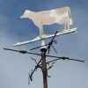
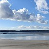

|
 |  |  |
 |
 |
eune brise
eune démié-brise
eune brîsette
un coup d'vent
eune tempête
eune dgêle
un vent coulais
les vents alîzés
eune pouffe dé vent
eune pouffée d'vent
eune bouffée d'vent
eune scouâle
un scouâlot
un grain dé vent
eune aube dé vent
un ouragan
eune chasse dé vent
un patchet d'vent
la ventâl'lie
la vouêteunme, lé vouêteunme
venter
i' vente dû
i' vente la pé du dgiâbl'ye
i' vente la pé d'un orîngna
i' vente à êcôner un boeu
i' veint les sept vents
au vent
souos l'vent
un vent d'amont
un vent d'ava

Viyiz étout: